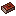
Relic Tome
Guide, Boost Codex, and per-player settings.
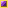
DeepForge Studios RPG RelicsPlayer wiki · Bedrock Edition
Find relics, equip them in the Reliquary, then deepen them at the forge.

Guide, Boost Codex, and per-player settings.
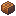
Opens your Reliquary wardrobe to equip.
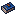
Browse skills and ranks. Crafting happens at the Attunement Forge block.
.mcaddon and enable Behavior + Resource packs.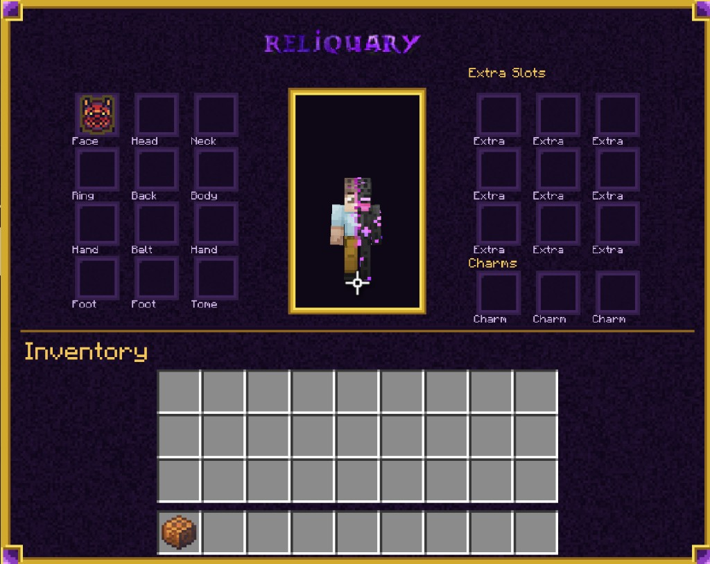
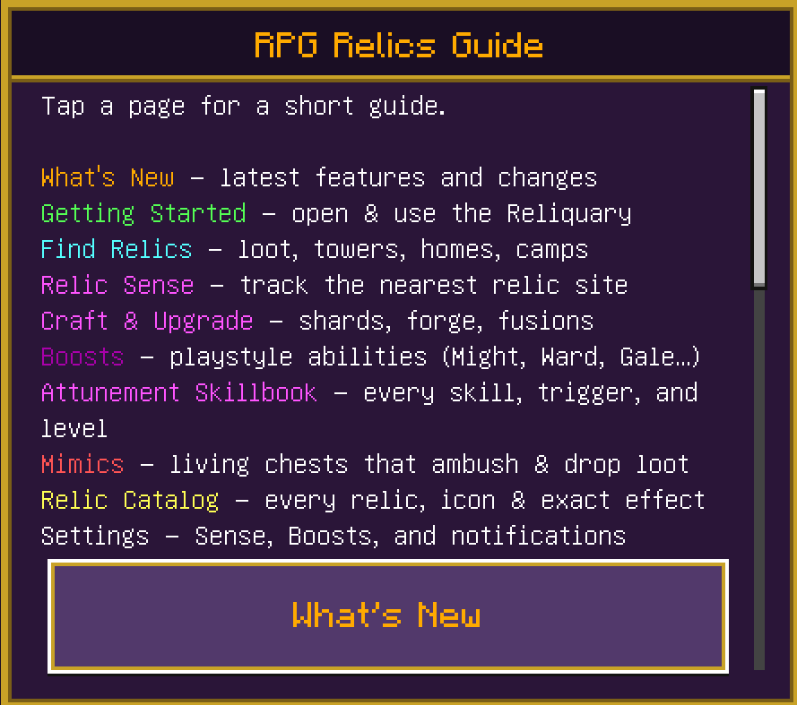
Browse by slot or rarity. Hover a card for more. Click to pin a tip.
Fuse two relics + a catalyst at the Relic Forge.
Equipped relics add power by rarity (Common 1 · Uncommon 2 · Rare/Ascended 3). Your strongest style becomes active.
Learn skills in the Codex. Perform rituals at the Forge.
Skill list, affinities, ranks, and how each ability triggers.
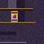
Placeable block for the ritual — shards, focus materials, and rolls.
Common → Uncommon → Rare → Epic. Higher ranks unlock new behavior.
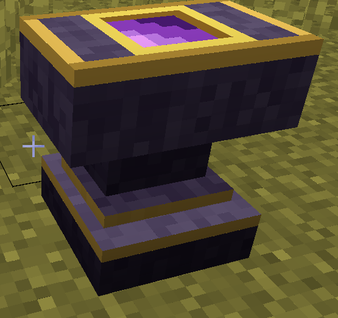
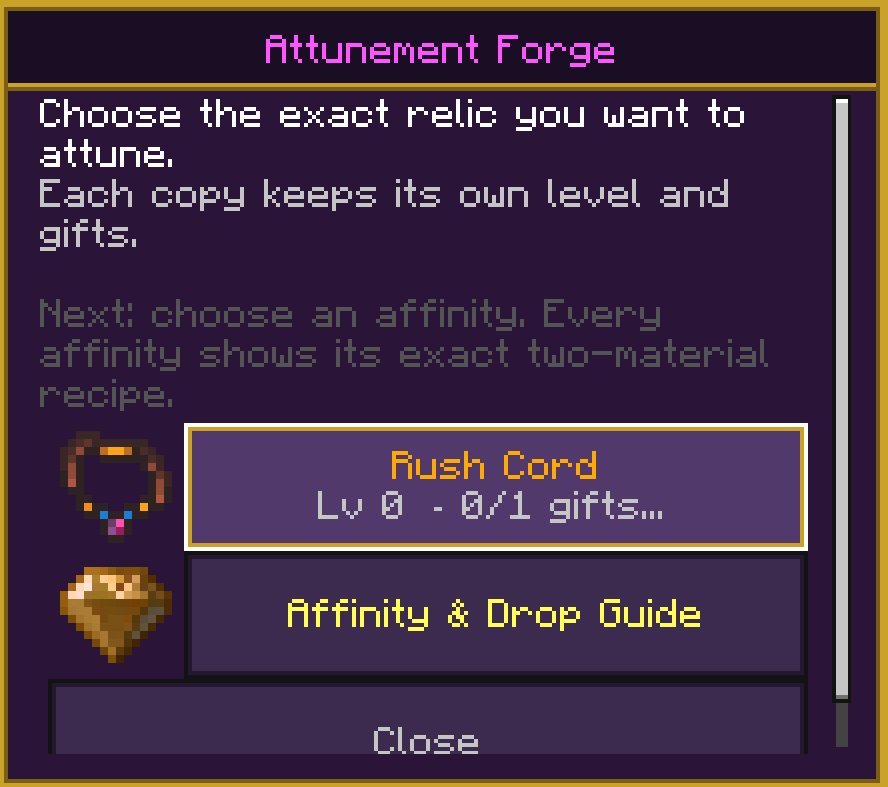
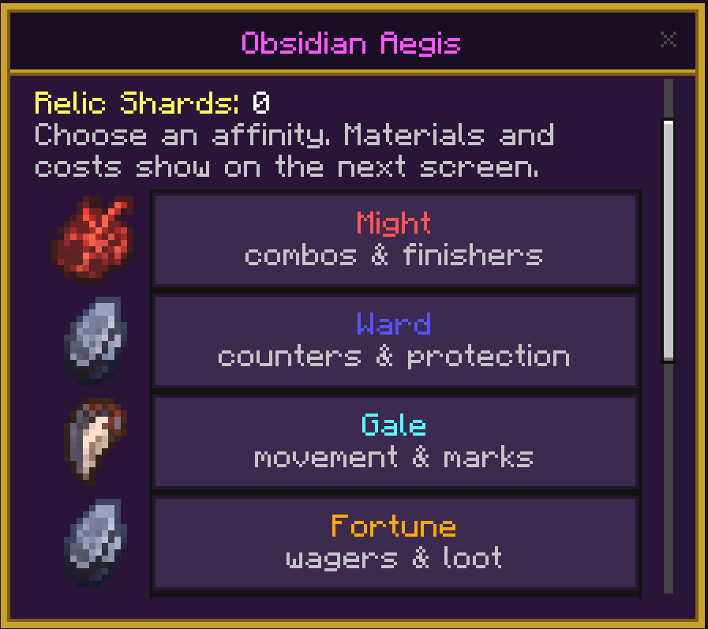
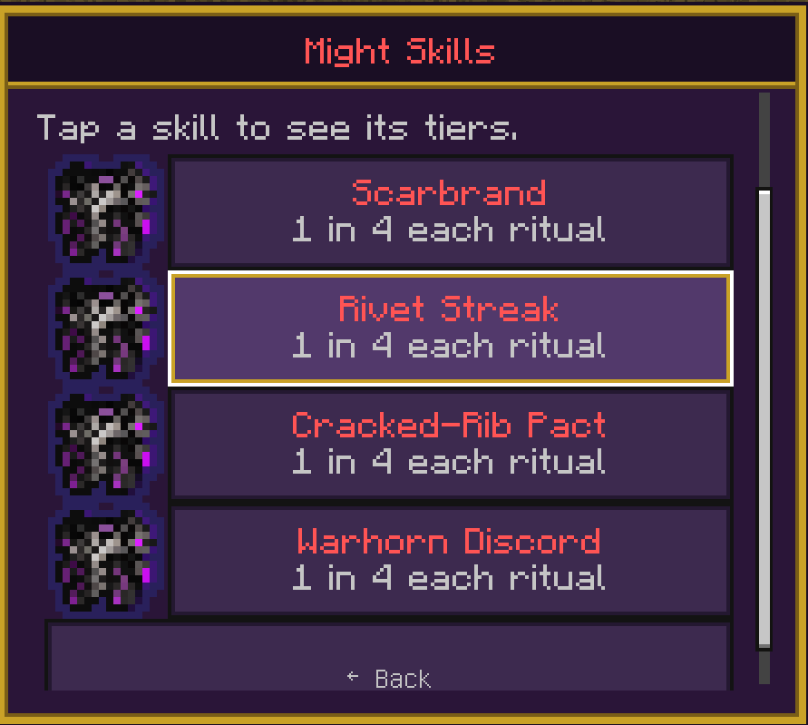
Where relics and materials show up in survival.
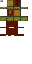
Fake chests that bite. Biome skins and different bite effects.
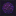
Craft and ascend. Recipe: crafting table, book, 2 amethyst, deepslate bricks.
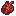
Towers, witch homes, underground camps, archaeology, and rare mob drops.
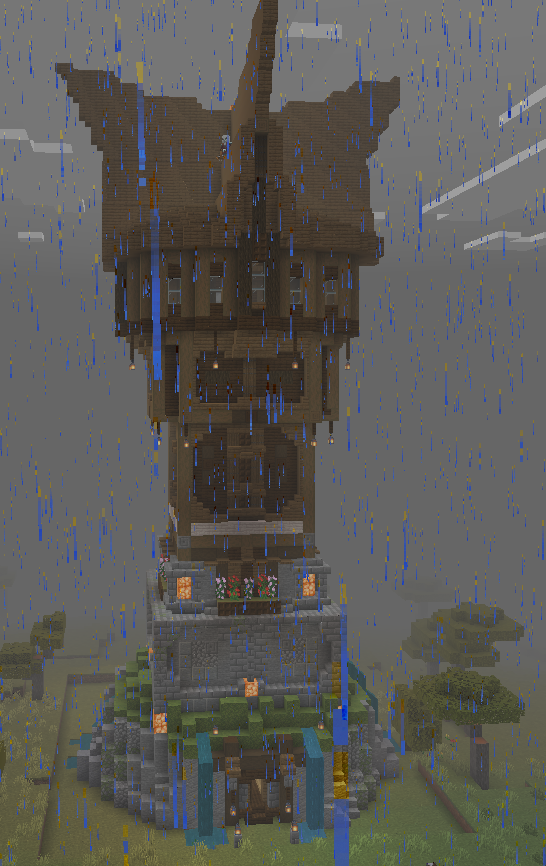
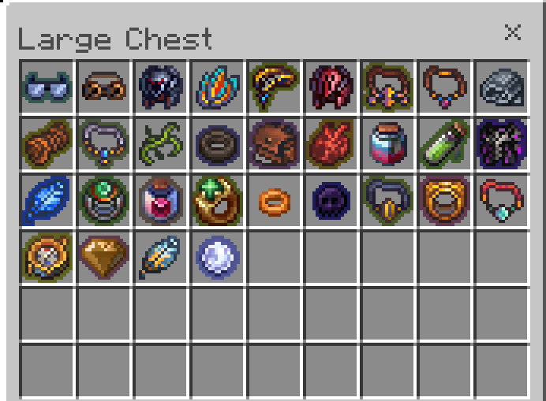
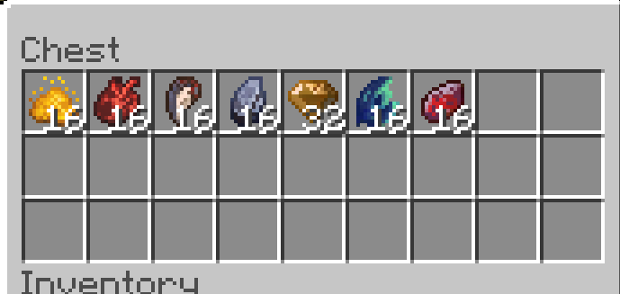
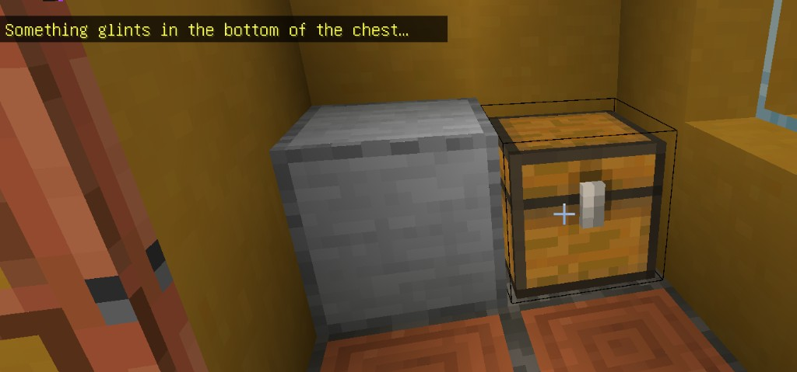